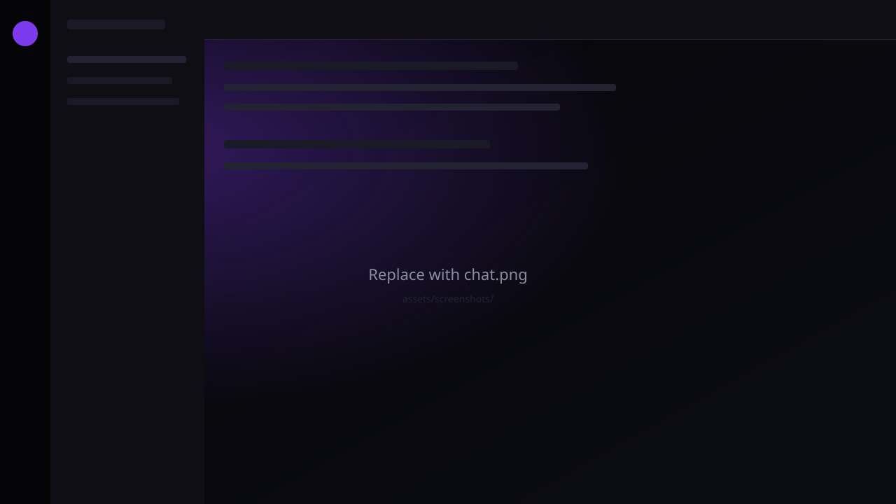
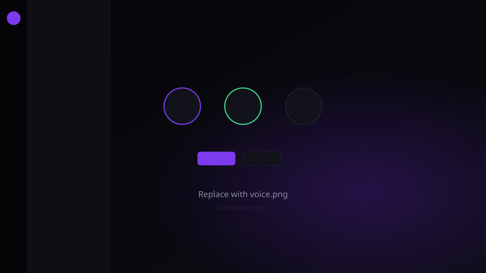

Neuro Connect
Lightweight communities. Private by default. Works offline on your LAN.
What it is
Self-hosted, lightweight, privacy-first voice & text chat for friends. A Discord-like experience with strong LAN/offline support, server-side media streaming, and low resource usage — built with Tauri + Rust.
Features
Everything you need for a private community — without the cloud lock-in.
- Text chat Markdown, spoilers, code highlighting, uploads, and DMs.
- Voice rooms WebRTC mesh with Opus, push-to-talk or open mic, mute and deafen.
- LAN discovery Find servers on your network with mDNS — no public internet required.
- Game Host board Share co-op IP:port with friends so everyone can join the same lobby.
- Beta & Release channels Beta lets you enter any server IP; Release locks to a baked community URL.
- Self-hosted updates Your neuro-server can publish client installers — no forced third-party store.
How it works
Three steps from zero to chatting with friends.
-
Host a server
Run
neuro-serveron a PC or VPS. A public IP is enough — no domain required. - Install the client Friends download Neuro Connect Beta (or Release) for Windows or Linux.
-
Connect
Enter
http://YOUR_IP:7420, or use Find on LAN when you’re on the same network.
Full guide: VPS hosting (public IP, no domain)
Screenshots
A peek at the dark UI — black surfaces, purple accents.


Download
Beta is recommended for most users — you can enter any friend’s server IP or URL at login. Release builds connect only to a fixed community server baked at compile time.
Detected platform: …